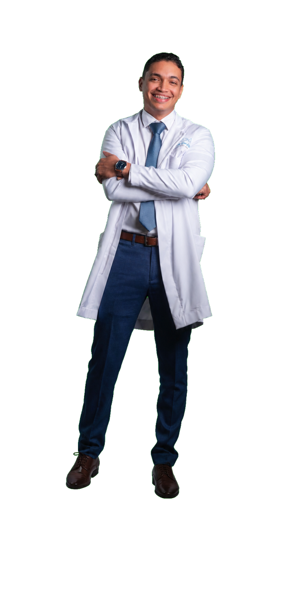
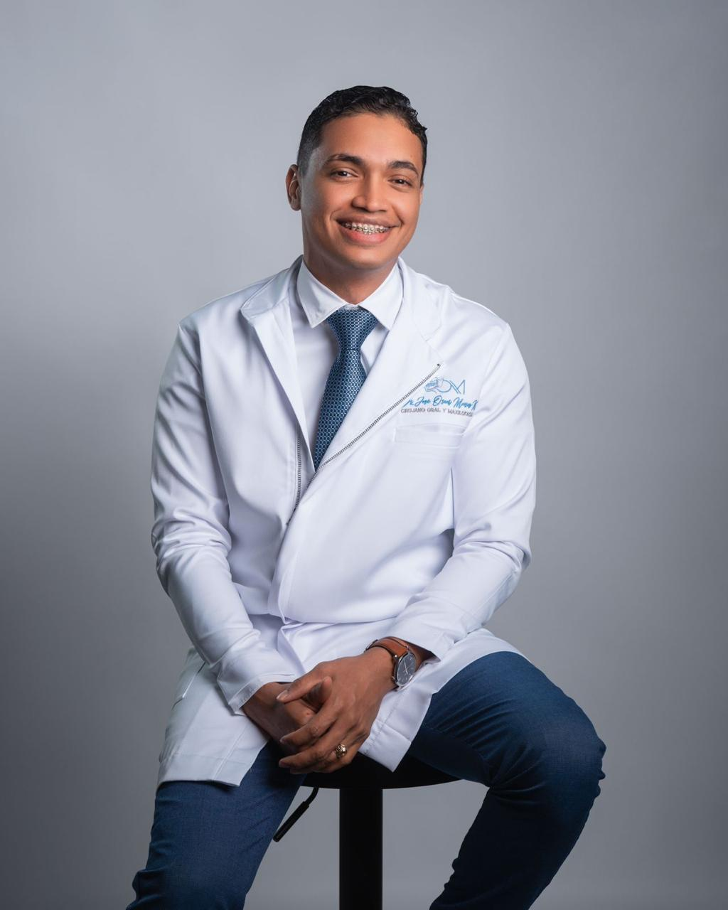

Extracción de terceros molares
Procedimientos controlados con enfoque mínimamente invasivo.
Cirugía Oral y Maxilofacial
Procedimientos quirúrgicos con precisión, planificación digital y protocolos de seguridad para tu salud facial y oral.

Nuestros servicios
Procedimientos controlados con enfoque mínimamente invasivo.
Rehabilitación oral con evaluación clínica y planificación digital.
Corrección de alteraciones óseas maxilofaciales complejas.
Diagnóstico integral y tratamiento especializado de la articulación.

Formación y experiencia
El Dr. Oscar Mieses es especialista en Cirugía Oral y Maxilofacial, con formación clínica y experiencia en centros hospitalarios de referencia.
Hospital Dr. Darío Contreras
AO CMF Fellowship
Protocolos de seguridad y planificación avanzada
Centros de atención
Centro de Especialidades Médicas Dr. Estrella
Hospital Especializado en Medicina (HEMMI)
Clínica San Antonio de Padua
SEMED
Hospital Luis Bogaert
Testimonios
Me explicaron todo antes del procedimiento y el seguimiento fue excelente. Me sentí tranquila desde la primera consulta.
Muy profesional, puntual y claro con cada paso del tratamiento. El resultado superó mis expectativas.
La atención fue humana y cuidadosa. Salí con un plan claro y con mucha confianza.